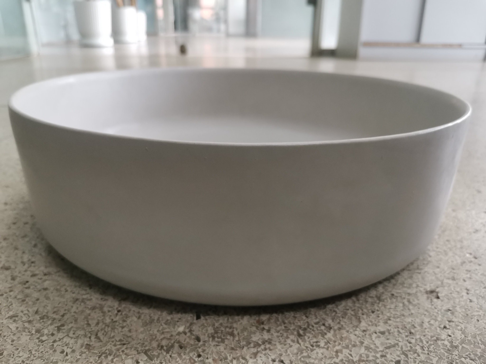

VELITH
VELITH is a thin-wall engineered mineral washbasin, cast in a pure white BCSA–RUFA mineral composite system.
With an 11 mm wall profile and a weight of only 6.672 kg, it offers the visual lightness of ceramic with the material depth of architectural mineral casting.

About VELITH
Engineered in Taiwan, VELITH is an architectural mineral casting platform focused on thin-wall engineered washbasins and refined mineral surfaces for contemporary interiors.
VELITH combines Taiwanese engineering development with advanced mineral composite research focused on precision casting, thin-wall construction, and architectural surface aesthetics.
Rather than following traditional decorative concrete aesthetics, VELITH explores a quieter and more refined material direction inspired by mineral ceramics, matte stone, and minimalist architecture.
Built around a pure white BCSA–RUFA mineral composite system, VELITH aims to create lightweight engineered mineral objects with the visual calmness of luxury architectural interiors.
The VELITH design language is based on simplicity, proportion, precision, mineral depth, and quiet luxury — not rustic concrete, not handmade imitation stone, but a new generation of engineered architectural mineral products.
Not a cement product — a designed material system.
VELITH is positioned as an Architectural Mineral Casting platform: quiet, pure, precise, and engineered for premium interior applications.
Pure Mineral White
A soft, quiet mineral white designed to move beyond ordinary gray concrete and toward a refined architectural surface identity.
Thin-Wall Construction
An 11 mm wall profile gives the basin visual lightness while retaining the material depth of mineral casting.
Engineered Composite
Built around a pure white BCSA–RUFA mineral composite concept for precision casting and high-end product positioning.
Prototype Specification
The current VELITH white countertop basin is compact, minimal, and lightweight for a cement-based architectural mineral product.
Designed for quiet luxury interiors.
VELITH is suited for boutique hotels, architectural residences, designer showrooms, hospitality spaces, and premium interior projects where material identity matters.
Boutique Hospitality
For hotel bathrooms and suites that require a calm, minimal, architectural object rather than a commodity basin.
Luxury Residential
For private homes, villas, and designer interiors seeking a pure white mineral alternative to ceramic or solid surface.
Specifier Projects
For architects and interior designers who want a distinctive material system with measurable engineering identity.
Minimal in form. Mineral in depth. Engineered in Taiwan for a new language of architectural washbasins.